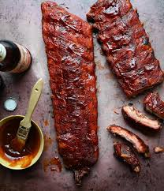

BBQ RIBS RECIPIE

Descripton
This smokey bbq rib recipie involves very little overall effort.
Only needing a couple of ingreditents you are really able to set it and forget it with this great new recipie.
- brown sugar
- chili flakes
- garlic powder
- onion podwer
- salt